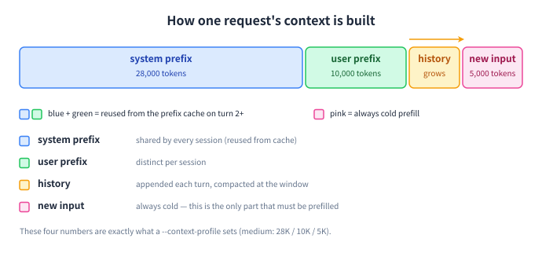
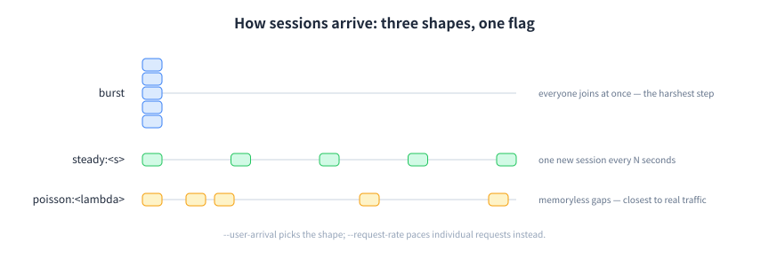

Configuration配置
The knobs you will actually touch你真正会动的几个旋钮
Everything else — all parameters, their defaults and accepted values — is in the reference, generated from clawperf --help.其余全部内容 —— 所有参数、默认值与可选值 —— 都在完整参考里，由 clawperf --help 自动生成。
Context profiles上下文档位
A profile sets the shared system prefix, the per-user prefix and the per-turn input at once, so you do not have to invent token counts. Names are case-insensitive.一个档位同时设定共享系统前缀、每用户前缀与每轮输入三个数字，免去自己拼 token 数。档位名大小写不敏感。
| Profile档位 | system prefix系统前缀 | user prefix用户前缀 | input / turn每轮输入 | base context基础上下文 | rounded约 |
|---|---|---|---|---|---|
fresh | 4,000 | 1,500 | 1,500 | 7,000 | ~7K |
short | 14,000 | 5,000 | 3,000 | 22,000 | ~22K |
medium | 28,000 | 10,000 | 5,000 | 43,000 | ~43K |
long | 50,000 | 18,000 | 7,000 | 75,000 | ~75K |
full | 72,000 | 25,000 | 8,000 | 105,000 | ~105K |
xl | 150,000 | 45,000 | 10,000 | 205,000 | ~205K |
xxl | 300,000 | 80,000 | 12,000 | 392,000 | ~392K |

Raw counts still work: --system-prefix-tokens, --user-prefix-tokens, --input-tokens-per-turn. A profile simply overrides all three.也可以直接用原始数字：--system-prefix-tokens、--user-prefix-tokens、--input-tokens-per-turn。档位只是把这三个一起覆盖掉。
Suites套件
A suite runs several (users × profile) scenarios in sequence and writes one result file per scenario. --model-context-length skips profiles that cannot fit the model window.套件按序跑完（并发 × 档位）的笛卡尔积，每个场景各写一份结果文件。--model-context-length 会跳过放不进模型窗口的档位。
| Suite套件 | users并发用户 | profiles档位 | turns轮数 | out/turn每轮输出 | runs场景数 |
|---|---|---|---|---|---|
quick | 1, 4, 8 | fresh | 10 | 256 | 3 |
standard | 1, 8, 16, 32 | medium + long | 20 | 512 | 8 |
full | 1, 4, 8, 16, 32, 64 | fresh → short → medium → long → full | 30 | 512 | 30 |
hitrate | 1 | fresh → short → medium → long → full | 5 | 128 | 5 |
# one profile
clawperf --mode scenario --context-profile medium --num-users 8 ...
# sweep profiles x users
clawperf --mode scenario --suite full --model-context-length 32768 ...Pacing & concurrency节奏与并发
Four knobs that are easy to confuse. The distinction that matters: a closed loop can never overload a server, an open loop can.四个容易混淆的旋钮。关键区别：闭环永远压不垮服务端，开环可以。
| Knob旋钮 | Controls控制什么 | Semantics语义 |
|---|---|---|
--user-arrival |
when each session joins每个会话何时加入 | users then run their turns back-to-back加入后各自连续跑自己的轮次 |
--concurrency |
closed loop: in-flight request cap闭环：在途请求上限 | the next request starts when one finishes — the server throttles the load上一个返回才发下一个 —— 节奏由服务端决定 |
--request-rate |
open loop: issue rate in req/s开环：每秒发送速率 | released on a Poisson schedule regardless of completions — this one can overload a server按泊松过程发送，与是否完成无关 —— 只有它会真正压垮服务端 |
--trace-users |
session-level concurrency for trace replaytrace 回放的会话级并发 | turns inside one session stay ordered同一会话内的轮次保持有序 |

Metrics endpoints指标端点
PD-disaggregated and multi-replica services expose one /metrics per instance. Pass them all: counters are summed into a fleet-wide view, ratio gauges averaged, and the per-engine table gains one row per instance.PD 分离与多副本服务每个实例各暴露一个 /metrics。全部传进来即可：计数器求和成全局视图、比率类指标取均值、逐引擎表按实例分行。
clawperf --mode scenario \
--endpoint http://lb:9000/v1 --model Qwen3-0.6B \
--tokenizer /mnt/model/Qwen3-0.6B \
--metrics-endpoint prefill=http://10.0.0.1:9101/metrics \
--metrics-endpoint decode=http://10.0.0.2:9102/metrics \
--reset-cacheLabels are optional (name=url; the default is host:port) and the flag is repeatable or comma-separated. --reset-cache resets every instance.标签可选（名称=url，默认 host:port）；该参数可重复或用逗号分隔。--reset-cache 会逐个重置所有实例。
Env vars & config file环境变量与配置文件
Precedence: CLI > environment > YAML (--config) > defaults. Every config field has a CLAWPERF_* counterpart, upper-cased. An explicitly passed flag always wins — even when its value equals the default.优先级：CLI > 环境变量 > YAML（--config）> 默认值。每个配置字段都有对应的大写 CLAWPERF_* 变量。显式传入的 flag 永远优先 —— 即使取值恰好等于默认值。
| Variable变量 | Equivalent to等价于 |
|---|---|
CLAWPERF_ENDPOINT | --endpoint |
CLAWPERF_MODEL | --model |
CLAWPERF_API_KEY | --api-key |
CLAWPERF_OUTPUT | --output |
CLAWPERF_HISTORY | --history ('' disables) |
CLAWPERF_UPSTREAM_ENDPOINT | --upstream-endpoint |
CLAWPERF_TOKENIZER_BACKEND | transformers | modelscope |
CLAWPERF_<FIELD> |
any field: CLAWPERF_NUM_USERS, CLAWPERF_CONTEXT_PROFILE, …任意字段：CLAWPERF_NUM_USERS、CLAWPERF_CONTEXT_PROFILE 等 |
# clawperf.yaml
mode: scenario
endpoint: http://localhost:8000/v1
model: Qwen3-0.6B
tokenizer: /mnt/model/Qwen3-0.6B
context_profile: medium
num_users: 8
max_turns: 20
slo_constraints: ["ttft.p99<=1500", "tpot.avg<=30"]
# CLI > env > YAML > defaults
clawperf --config clawperf.yaml --num-users 16